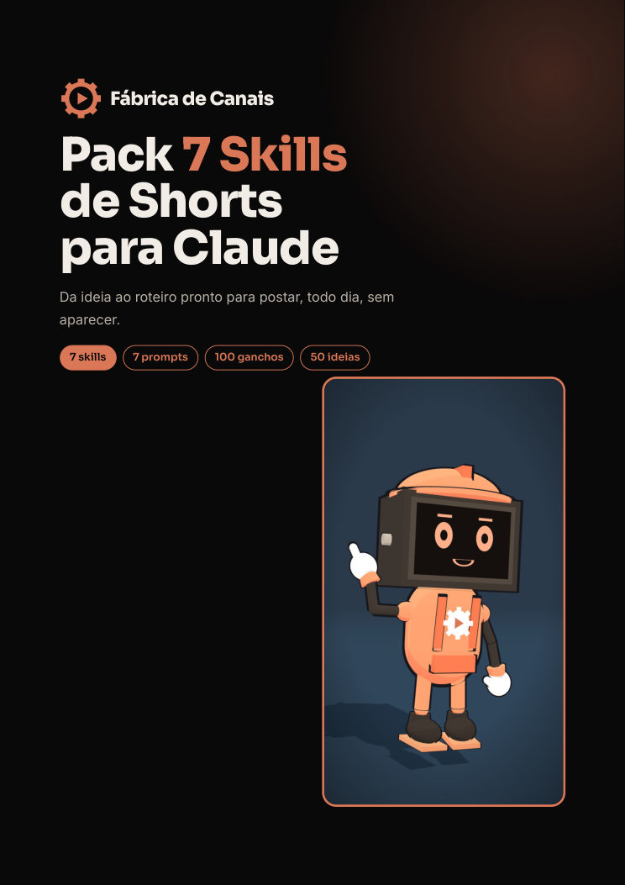

Novo · R$ 19,90
Pack 7 Skills de Shorts para Claude
As skills que a Fábrica usa para escrever os roteiros dos nossos canais, para você instalar no Claude: ficha do canal, 30 ideias, roteiro de 60 s, gancho, narração, título e revisor. Mais 100 ganchos e 50 ideias prontas.